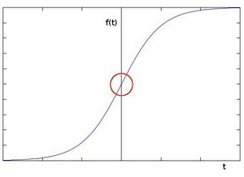

Sobel Derivatives
Goal
In this tutorial you will learn how to:
- Use the OpenCV function cv::Sobel to calculate the derivatives from an image.
- Use the OpenCV function cv::Scharr to calculate a more accurate derivative for a kernel of size \(3 \cdot 3\)
Theory
The explanation below belongs to the book Learning OpenCV by Bradski and Kaehler.
In the last two tutorials we have seen applicative examples of convolutions. One of the most important convolutions is the computation of derivatives in an image (or an approximation to them).
Why may be important the calculus of the derivatives in an image? Let’s imagine we want to detect the edges present in the image. For instance:

You can easily notice that in an edge, the pixel intensity changes in a notorious way. A good way to express changes is by using derivatives. A high change in gradient indicates a major change in the image.
To be more graphical, let’s assume we have a 1D-image. An edge is shown by the “jump” in intensity in the plot below:
The edge “jump” can be seen more easily if we take the first derivative (actually, here appears as a maximum)

So, from the explanation above, we can deduce that a method to detect edges in an image can be performed by locating pixel locations where the gradient is higher than its neighbors (or to generalize, higher than a threshold).
More detailed explanation, please refer to Learning OpenCV by Bradski and Kaehler
Sobel Operator
- The Sobel Operator is a discrete differentiation operator. It computes an approximation of the gradient of an image intensity function.
- The Sobel Operator combines Gaussian smoothing and differentiation.
Formulation
Assuming that the image to be operated is \(I\) :
We calculate two derivatives:
- Horizontal changes : This is computed by convolving \(I\) with a kernel \(G_{x}\) with odd size. For example for a kernel size of 3, \(G_{x}\) would be computed as:
\[\begin{split}G_{x} = \begin{bmatrix} -1 & 0 & +1 \\ -2 & 0 & +2 \\ -1 & 0 & +1 \end{bmatrix} * I\end{split}\]- Vertical changes : This is computed by convolving \(I\) with a kernel \(G_{y}\) with odd size. For example for a kernel size of 3, \(G_{y}\) would be computed as:
\[\begin{split}G_{y} = \begin{bmatrix} -1 & -2 & -1 \\ 0 & 0 & 0 \\ +1 & +2 & +1 \end{bmatrix} * I\end{split}\]At each point of the image we calculate an approximation of the gradient in that point by combining both results above:
\[G = \sqrt{ G_{x}^{2} + G_{y}^{2} }\]Although sometimes the following simpler equation is used:
\[G = |G_{x}| + |G_{y}|\]
When the size of the kernel is 3, the Sobel kernel shown above may produce noticeable inaccuracies (after all, Sobel is only an approximation of the derivative). OpenCV addresses this inaccuracy for kernels of size 3 by using the cv::Scharr function. This is as fast but more accurate than the standar Sobel function. It implements the following kernels:
You can check out more information of this function in the OpenCV reference (cv::Scharr). Also, in the sample code below, you will notice that above the code for cv::Sobel function there is also code for the cv::Scharr function commented. Uncommenting it (and obviously commenting the Sobel stuff) should give you an idea of how this function works.
Code
What does this program do?
- Applies the Sobel Operator and generates as output an image with the detected edges bright on a darker background.
The tutorial code’s is shown lines below. You can also download it from here
#include "opencv2/imgproc.hpp" #include "opencv2/imgcodecs.hpp" #include "opencv2/highgui.hpp" using namespace cv; int main( int, char** argv ) { Mat src, src_gray; Mat grad; const char* window_name = "Sobel Demo - Simple Edge Detector"; int scale = 1; int delta = 0; int ddepth = CV_16S; src = imread( argv[1], IMREAD_COLOR ); // Load an image if( src.empty() ) { return -1; } GaussianBlur( src, src, Size(3,3), 0, 0, BORDER_DEFAULT ); cvtColor( src, src_gray, COLOR_BGR2GRAY ); Mat grad_x, grad_y; Mat abs_grad_x, abs_grad_y; //Scharr( src_gray, grad_x, ddepth, 1, 0, scale, delta, BORDER_DEFAULT ); Sobel( src_gray, grad_x, ddepth, 1, 0, 3, scale, delta, BORDER_DEFAULT ); //Scharr( src_gray, grad_y, ddepth, 0, 1, scale, delta, BORDER_DEFAULT ); Sobel( src_gray, grad_y, ddepth, 0, 1, 3, scale, delta, BORDER_DEFAULT ); convertScaleAbs( grad_x, abs_grad_x ); convertScaleAbs( grad_y, abs_grad_y ); addWeighted( abs_grad_x, 0.5, abs_grad_y, 0.5, 0, grad ); imshow( window_name, grad ); waitKey(0); return 0; }
Explanation
First we declare the variables we are going to use:
Mat src, src_gray; Mat grad; const char* window_name = "Sobel Demo - Simple Edge Detector"; int scale = 1; int delta = 0; int ddepth = CV_16S;
As usual we load our source image src :
src = imread( argv[1], IMREAD_COLOR ); // Load an image if( src.empty() ) { return -1; }
First, we apply a cv::GaussianBlur to our image to reduce the noise ( kernel size = 3 )
GaussianBlur( src, src, Size(3,3), 0, 0, BORDER_DEFAULT );
Now we convert our filtered image to grayscale:
cvtColor( src, src_gray, COLOR_BGR2GRAY );
Second, we calculate the “*derivatives*” in x and y directions. For this, we use the function cv::Sobel as shown below:
Mat grad_x, grad_y; Mat abs_grad_x, abs_grad_y; //Scharr( src_gray, grad_x, ddepth, 1, 0, scale, delta, BORDER_DEFAULT ); Sobel( src_gray, grad_x, ddepth, 1, 0, 3, scale, delta, BORDER_DEFAULT ); //Scharr( src_gray, grad_y, ddepth, 0, 1, scale, delta, BORDER_DEFAULT ); Sobel( src_gray, grad_y, ddepth, 0, 1, 3, scale, delta, BORDER_DEFAULT );
The function takes the following arguments:
- src_gray : In our example, the input image. Here it is CV_8U
- grad_x /*grad_y*: The output image.
- ddepth : The depth of the output image. We set it to CV_16S to avoid overflow.
- x_order : The order of the derivative in x direction.
- y_order : The order of the derivative in y direction.
- scale, delta and BORDER_DEFAULT : We use default values.
Notice that to calculate the gradient in x direction we use: \(x_{order}= 1\) and \(y_{order} = 0\). We do analogously for the y direction.
We convert our partial results back to CV_8U :
convertScaleAbs( grad_x, abs_grad_x ); convertScaleAbs( grad_y, abs_grad_y );
Finally, we try to approximate the gradient by adding both directional gradients (note that this is not an exact calculation at all! but it is good for our purposes).
addWeighted( abs_grad_x, 0.5, abs_grad_y, 0.5, 0, grad );
Finally, we show our result:
imshow( window_name, grad ); waitKey(0);
Results
Here is the output of applying our basic detector to lena.jpg :